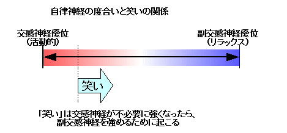
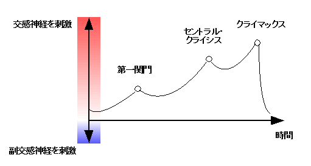

| お笑いネタの作り方 | |
| 中村あやえもん | |
| Ayaemo kenkyusyo (2014) | |
お笑いネタの作り方
中村あやえもん
Copyright © 2011, 2014 Ayaemo Research Institute. All rights reserved. Including the right to reproduce this book or portions thereof, in any form. No part of this text may be reproduced in any form without the express written permission of the author.
Version 2014.2.17
はじめに
本書は、シナリオライターや脚本家、小説家などのシナリオ制作に関わる方を対象とした、「お笑い」の作り方を説明しています。
笑いとはどのように生まれるのか、その心理学的なメカニズムと、笑いを取るにはどのようにすればよいのか、その作り方を説明しています。
なお、本書では主に「文章で笑いを作る方々」を対象としています。そのため、笑いで重要になる「間（タイミング）」や「リズムや韻的な面白さ」、「外見（視覚）的なお笑い」などの「文章レベルでは用いない笑い」の説明は最低限に抑えていますので、ご注意下さい。ただし、そのような方々にも、お笑いの基礎を学ぶ内容としては十分にお役立て頂けると思います。
物語に「笑い」があることによる効果
物語で「笑い」はとても重要な役割を持ちます。
それは、物語の序盤で笑いを取ることによって、読み手や観客の気持ちをリラックスさせて、物語に引き込むことができるためです。笑いでくつろがせることによって、後半のシリアスシーンをより引き立てることができるのです。
日常会話でも同じです。笑いがあると、人間関係がよりスムーズに進むものです。
また、ビジネスの現場でも同じです。「ビジネスにおける商談の場面では、相手と出会ったら、まずは簡単に笑いを取れ。すると相手の肩の力が抜けて、続く商談が上手くいく」といったテクニックがあります。これも物語と同様に、笑いを取ることでリラックスさせて、後半の真面目な話を受け入れやすくできるのです。
どんなに迫力のある緊迫したシリアスシーンや、どんなに泣ける場面を作ったとしても、読み手の気持ちがリラックスできておらずに、物語を受け入れる余裕がなければ、元も子もなくなります。
ですが、「笑い」を効果的に組み込むことによって読み手の心をリラックスさせて、物語に引き込み、見せ場をより魅力的に見せることができるようになるのです。
心理学的に笑いを分析するアプローチ
私は今まで様々な、笑いの作り方についての教材を読んできました。ですが、「笑い」の心理学的なメカニズムを説明している教材は皆無で、そしてそのような心理学的な基礎を元にした笑いの作り方を説明した本も皆無でした。
あるのは散発的な経験則によるアイデアばかりで、論理的な考え方に従った「笑いの作り方」は今までありませんでした。
まあ一流のお笑い芸人でも「笑い」は法則化できないという状況なので、誰もが笑いを法則化するのは不可能だと思っているのが現状です。
実際に「笑い」は常に変化しているものです。時代ごとに笑いは変わりますし、国によっても変わります。五十年前のお笑いが現代には通用しないことが多くあり、日本のトップレベルのお笑い芸人がアメリカでは通用せずに、同じようにアメリカで大流行したお笑い番組が日本では全然流行らないといった現象もあります。また、日本の中で見ても、あるネタがウケる世代とそうでない世代があるように、国や地域だけでなく、世代間でも笑いのツボは変わるものです。
このように、「笑い」は一見つかみ所がなくて、「習うより慣れろ」とか「センスが重要」といった風に、理屈が通らない世界のように見えます。
ですが、私はこれまで心理学を学んできて、その心理学を土台にすることで、ようやく笑いを理屈で説明することができるようになりました。
この心理学的に笑いを分析するアプローチを用いることで、なぜ国や地域、世代間で笑いが変わるのかを説明できるようになります。それだけでなく、この方法論を用いることで、その時代や社会にそれぞれ合った笑いを、システマティックに作ることができるようになるのです。
本書はそのような、「笑い」の心理学的なメカニズムと、それに基づいた「お笑いネタ」の作り方を説明しようと思います。
本書の流れと対象者
まず第一章では、人間が持つ「感情」の心理学的なメカニズムを説明します。それを元に、第二章でお笑いの構造を説明します。第三章で、実際にお笑いネタの作り方を具体的に説明してゆきます。
心理学的な解説が不要な方は、いきなり第二章から読んで頂いて構いません。ただし、第一章を読んでいた方が、より深く内容を把握できるかと思います。
第一章では、笑いだけでなく、泣きや怒りなどについても説明していますので、物語を作りたい方にとっては、感情がどのように引き起こされるのか、その参考になると思います。
この方法を用いれば、「泣き」を作るのも理解がしやすくなると思います。
本書は漫才のように笑いを専門にする方から、物語で部分的に笑いを埋め込みたい方まで、多くの方に利用頂けると思います。
是非本書で紹介するお笑いの作り方を、よりよい笑いを作る、その土台にして頂ければと思います。
本書が少しでもお役に立てれば嬉しいです。
目次
● はじめに
● 目次
● 第一章 「笑い」のメカニズム
● 第二章 「お笑い」の構造
○ 「お笑い」の定義と構造
○ 第一段階「笑いを作る」段階
○ お笑いは、自尊心を与えることではない
○ 第二段階「笑いを文脈（物語）にする」
○ 状況を設定する「お題（前提条件）」
○ 笑いのきっかけを作る「振り（きっかけ作り）」
○ ボケとなる「ねじれ」のメカニズム
○ 笑いを確定する「客観化」のメカニズム
○ 客観化におけるタイミングの重要性
○ 第三段階「上手く表現する」
● 第三章 お笑いネタの作り方
○ お題作りの前準備
○ お題（前提条件）の作り方
○ 人物以外の物や事で笑いを作る場合
○ 振り（きっかけ作り）の作り方
○ ねじれの作り方
○ ねじれを表現する上での注意点
○ 客観化の仕方
○ 客観化によって笑いを作る方法
○ 上手く表現するための「言い回し」の作り方
○ 話の展開を作る
○ 物語で、同じキャラで多くの笑いのバリエーションを作る方法
● あとがき
● 参考文献
● おくづけ
第一章 「笑い」のメカニズム
「笑い」の定義
「笑い」の作り方に入る前に、「笑い」のメカニズムについて説明しておきましょう。
本章は、笑いの作り方とはほとんど関係ない前置きになりますので、物語における「お笑い」の作り方をすぐに知りたい方は読み飛ばして頂いて構いません。
さて、私たちは普段いろんな状況で「笑い」に触れています。足の裏や脇をくすぐられた時に笑いますし、突然びっくりするような出来事が起こった直後、不意に「ははっ......」と力なく笑ってしまう場合もあるでしょう。また、赤ん坊であれば、「いないいないばあ」をした時に笑うでしょう。子ども同士がかけっこをしている時にも屈託なく笑いますし、おもちゃで遊んだ時に笑うこともあるでしょう。そして、大人であれば、人や自分が失敗したことをおもしろおかしく話す時にも笑うでしょうし、あざける時や自嘲する場合でも笑いは用いられます。
ならば、「笑い」とはいったい何なのでしょうか。
本書では、笑いを以下のように定義することにします。
（「笑い」の定義）
「笑い」とは、「ストレスを軽度に取り除く仕組み」のことを指す。
世の中には様々なストレスがあります。ストレスとは、「刺激」だと思えばいいでしょう。人間にとって、何かしらの刺激があることは全てストレスになります。
例えば突然驚かされた場合、びっくりしてストレスを抱えます。赤ん坊の「いないいないばあ」も同じで、赤ん坊にとっては何もないところから急に顔が出てきて驚くわけです。それは、驚きによってストレスを抱えるためです。足の裏や脇、脇腹をくすぐられる場合も、普段触れることがない場所に触れられることは、神経が慣れておらずに過敏になり、ストレスを抱えることになります。これは生物的な本能に従った「動物的なストレス」と表現できるかもしれません。
また、動物的なストレスだけではなく、人間は「社会的なストレス」も抱えます。
人間は社会的な動物なので、序列や優劣といった、社会的環境による心理的ストレスをも抱えます。例えば「自分が周囲の人たちと比べて劣っている」「周囲の人たちと調和できない」といった思いもストレスになりえるのです。
「笑い」と自律神経の関係
ところで、「笑い」といった感情面の説明をする場合、どうしても避けて通れないのが、感情と自律神経との関係です。
少しだけ話が「笑い」から逸れるように見えますが、まずは自律神経についての説明をしておきましょう。
人間は自律神経を持っています。自律神経を調整することで、体を活発に活動させたり、休息させることができます。
自律神経には「交感神経」と「副交感神経」があって、交感神経はいわば「活動するための神経」、副交感神経は「リラックスするための神経」だと思えばいいでしょう。
狩猟をする時や敵に遭遇するなどの危機に直面するといった場合、脳は交感神経を刺激することによって、体に「活動的になれ」という命令を出します。それによって関連するホルモンが分泌され、心拍数を多くしたり血圧を上げたりして、体をより素早く、力強く動かすことができるようになるのです。
ですが、体を常に活動的にしていては体に無理が出てしまいます。そこで、活動的になる必要のない時は副交感神経を刺激することで、体を休ませてリラックスし、落ち着かせます。
それではストレスに話を戻しましょう。
ストレスは交感神経を刺激します。
しかし、あまりに活動的になりすぎるのも問題だという状況では、同時に副交感神経をも活動させて、体に「少し落ち着かせろ」という命令を出します。そこで、人は「笑い」を用いることで、副交感神経を活性化させ、「活動度」のバランスを取ります。
この関係を、次図に示します。

例えば、子どもは公園で走りながらよくケラケラ笑うものです。それは、子どもはまだ大人のように自律神経の調整が上手くできないためですね。子どもは活動的になると交感神経が刺激されて興奮しますが、調整が上手くできないので交感神経は暴走しがちです。
そこで、副交感神経も同時に多く刺激して、リラックスさせなければなりません。だから「子どもはよく笑う」のです。特に赤ん坊は、こと多く笑うわけです。
大人になればなるほど体を動かしても笑わなくなるのは、自律神経が上手く操れるようになるため、大きく副交感神経を刺激する必要がなくなるためですね。
他の例で言うと、高校で行われる野球部の練習や、真剣勝負の場面などでは、活発に活動しているのに笑い声などはありません。それは、状況的に「リラックスする必要がないため」ですね。「交感神経のみでいい」という状況、すなわち緊迫した場面や、命のやりとりをするかのような戦いの場面においては、極限まで交感神経を高める必要があります。だから、野球部の練習で「笑いが漏れる」というのは、「緊張感が欠けている」という証拠になるわけですね。真剣勝負のような一瞬の判断が重要になる状況においては、リラックスしていたら逆に危険で、それは怪我の元になります。だから、真剣勝負の場所では笑いを禁じるのです。
一方で、緊張しすぎている場合など、交感神経が優位になりすぎて逆に体が動かなくなる場合があります。その場合、笑いを作ることでリラックスを生み、交感神経を少し抑えてちょうどよい自律神経のバランスを作るのです。
「感情」とは何か
ところで、人間には「感情」があります。「笑い」を説明するためには、「感情」について理解しておく必要があります。
ここからしばらくは、「笑い」だけではなく、「感情」について説明してみましょう。
感情には、喜怒哀楽と言われるように、怒りや哀しみ、喜びや安らぎなどがあります。その感情が身体的な反応を伴うと、「怒り」「不安」「笑い」「泣き」などになります。
では、なぜ人間には「感情」があるのでしょうか。なぜ、感情が必要なのでしょうか。
これも、自律神経と大きく関わっています。
人は、命や安全に対する危険を感じた場合、自分の身を守るために活動的にならなくてはなりません。そこで、交感神経を刺激する必要があります。
「怒り」は身の危険を感じた時に起こる手段の中では、最も強く、短時間で交感神経を刺激する方法になります。自分の領域を侵害されたり、社会的な安全を保っていられない場合、怒りによって活動的になり、その脅威を排除しようとしたり、危機を乗り越えようとします。
「不安」は「怒り」よりも少し弱い、交感神経を刺激する方法です。すぐに対処する必要がない危険性の場合、それほど強く交感神経を刺激する必要はありません。じんわり交感神経を刺激して、少しでも対処をさせようとします。
一方で「泣き」は、強くなりすぎた交感神経を短時間で急激に抑えなければならない場合に起こる、最も強力な副交感神経を刺激する方法になります。怒りと同様に瞬間的に発動して、ストレスを緩和する手段になります。
「笑い」は「泣き」よりも少し弱い、副交感神経を刺激する方法です。少しだけ強くなりすぎた交感神経を抑えるために用いられる反応です。
これらを図で示すと、次図のようにできるでしょう。
「笑い」と「泣き」というのは一見全く別の、対極のもののように思えるものです。ですが実際は、「笑い」と「泣き」というのは、同種のものなのです。
「笑いすぎて涙が出る」「笑いながら泣く」というのはよくあるものです。それは、「笑い」と「泣き」が同種で、その時の感情が「笑い」と「泣き」の境界線上にあるからそのような現象が起こるのです。笑いを激しくしたら、人は泣くわけですね。
他の例で言うと、赤ちゃんに「いないいないばあ」をすると、ケラケラと笑います。それはストレスの度合いが小さいから、笑いでストレスを抑えられるわけですね。ですが、鬼のお面を被った人が突然大声で突入してくると、赤ちゃんは身の危険を感じて強く交感神経が刺激され、びくっとなりショックを受けます。これは、急激に交感神経を高めることで、相手（危機）に対して注意を向けて、集中していることになります。
そして危機が去り、ショックから立ち直ると、急激に高められた交感神経を急激に弱めなければなりません。すると「笑い」では間に合わないため、赤ちゃんは「泣く」わけですね。
同じケースで大人を驚かせた場合、大人は自律神経が上手く調整できるために、わざわざ「泣く」までせずとも、「笑い」で抑えられるわけです。だから、大人は驚いた直後に、条件反射的に「ははっ......」と笑ってしまうのです。
若い女性で感受性が高くなり、よく笑う時期があります。それを「箸が転んでもおかしい年頃」とも言います。これは異性を意識し始める時代にちょうど当てはまり、そのような時は異性とすれ違うだけでもドキドキして交感神経が高まりがちです。そんなとき、多く交感神経が刺激されがちなので、それを抑えようとして副交感神経を刺激するために、よく笑うということですね。
年齢を重ねて自律神経がコントロールできるようになるにつれて、感情の波が静まって安定してゆくものです。
ですが、もちろん大人も、短時間で強烈なストレスを抱えた場合、「泣く」という行動を起こします。それによって、副交感神経を急速に強めます。例えば高校球児が甲子園で戦っている場合、交感神経を極限まで使っています。ですがそこで負けた場合、試合終了と同時に交感神経は不要になるので、交感神経を急速に和らげようという働きが起きます。だから「負けて泣く」という行動が自然と起きるわけですね。
試合終了直後に泣かない（泣けない）球児は、まだ負けたという状況を掴みきれてないだけですね。ロッカーに下がって、バスに乗って、「負けた」と初めて腑に落ちた段階で、自然と涙は溢れ出てくるものなのです。
高校球児は、真剣であればあるほど、泣くのです。
「感情」を操作する鍵
このように、人間にとって「感情」は生きる上では必要なものです。
だから、物語でよくあるような、シリアスシーンで「泣かないで。笑ってよ......」というセリフは、自律神経の観点から言うと少しおかしかったりします。どちらも副交感神経を刺激するためのものなので、「泣く」も「笑う」も同質のものなのです。
まあ百歩譲って「副交感神経を働かせる程度を落として」という意味だったとしても、どうせなら「副交感神経を刺激しないでよ......」「副交感神経をもう少し弱めてよ......」と言わせるのがより正確なのです。
また、人間は自律神経を適正に調整することで、環境に適応できるようになります。
なので、「感情」とは人間にとって必要なものなのです。「怒ってはいけません」とか「不安になってはいけません」とか言ったり、子どもに「笑ってはいいけど、泣いてはいけません」と言うのはおかしいのです。
もちろん人間は社会的な動物なので、ある程度感情の発露を制御する必要があります。大勢のいる場所で怒ったり、泣き出したりすることは、「感情（自律神経）のコントロールができない」イコール「子ども」だと見なされて、社会性という意味で不利になることが多いものです。
ですが、自律神経は適宜調整しなければならないものなのです。こと人間の心と体の健康という点においては、「泣いてはいけません」という教えは、極めてむごいことだと思うぐらいでいいでしょう。
強いストレスを感じているのに「泣いてはいけない」というのは、血がダラダラと流れ出ているのに、「止血をしてはいけません！」と言っているのと同じようなものです。
だから、泣いている子どもの健康を考えるなら、「泣いちゃだめよ」と言うのではなく、むしろ「泣きわめけ！」と言うぐらいでいいわけですね。すると自律神経の調整機能が少しずつ鍛えられてゆき、自律神経のコントロールがつくような年齢になると、自然と「泣く」から「笑う」程度で抑えられるようになるわけです。泣けば泣くほど、笑えるようになるのです。
しかし、子どもの頃に泣くことを許されなかったり、怒ることを許されなかったりすることで、この自律神経のコントロール機能を鍛えられない場合があります。
心因性の二大疾患として自律神経失調症と統合失調症がありますが、共に自律神経のコントロールと深く関わっています。
例えば、自律神経の調整機能が鍛えられないまま育ってしまうと、十代後半や二十代ぐらいになって、わけもなく急に不安になったり、哀しくなったりするという症状を抱える場合があります。これが、感情（自律神経）のコントロールができないという、自律神経失調症になるわけですね。
場合によっては、交感神経を常に高めようとして、交感神経を刺激するホルモンの高い状態と欠乏状態を周期的に繰り返す躁鬱（そううつ）という形でも出る場合もあります。
他の例では、泣けずに感情を無理矢理押し殺されてしまうと、副交感神経が使われなくなり、交感神経が暴走しがちになります。すると、交感神経が常に優位になって、ちょっとしたことでも怒り散らしたり、普通の状態でも強い不安に苦しむようになるのです。あまりに恒常的に交感神経が強くなりすぎると、幻覚や幻聴となって「誰かが自分の悪口を言っている」「誰かが自分を殺そうとしている」「自分の考えていることが他の人に伝わっているんじゃないか」といった、常に強い不安を抱えるという強迫観念が生み出されます。これが、統合失調症の陽性反応になります。
逆に、怒ることを許されない場合、副交感神経が強くなりすぎて、「活動的になれなくなる」という症状になります。これによってやる気がなくなったり、引きこもりが起こるわけですね。
このように、感情と自律神経は切っても切り離せない関係にあります。
人間にとって自律神経が必要なように、感情も必要なのです。怒りも不安も、笑いも哀しみも、全部大切なものです。どれか一つだけが尊ばれて、どれか一つだけが蔑まれるというのはおかしいと思うぐらいでいいでしょう。
また、社会的には「大の大人が泣くのは恥ずかしい」「顔を真っ赤にして怒るのは恥ずかしい」とされています。確かに社会的にはそうなのですが、子どもに対しても同じように感情を押し殺すように仕向けることは、将来的には逆効果になるのだと思うといいでしょう。怒って、泣いて、そうして少しずつ自律神経のコントロールができるようになるのですから。
多少話が健康の方に傾いてしまいましたが、物語作りにおいても、読み手の感情を操るにはこのメカニズムが重要になります。
このメカニズムを知ることが、読み手の感情をコントロールするために必要な土台となるのです。
物語における「泣き」「笑い」の効果
ここまでで、感情と自律神経についての説明をしてきました。
それでは、これを物語に適用して考えてみましょう。
「はじめに」でも触れましたが、ビジネスの現場では「商談相手と出会ったら、まずは簡単に笑いを取れ。すると相手の肩の力が抜けて、続く商談が上手くいく」といったテクニックがあります。
これは、笑いを取ることによって副交感神経を刺激してリラックスしてもらい、緊張の度合いを一度下げます。そうすることで、その後に続く真面目な話（交感神経を使う話）を受け入れやすくするのです。
これと同様に、物語でも、冒頭や序盤に「笑い」を挿入されることが多くあります。
物語というのは、基本的に「交感神経を刺激するもの」です。感動ものにしても、主人公が悩んで苦しんだりしますし、サスペンスなら身の危険を感じるシーンが連続するものです。
ですが、ストレスを抱えた状態の人にさらにストレスを与えるのは、人にとっては快楽ではなく苦痛になる危険が多くあります。「刺激がないな～」という副交感神経が優位な人にとってはいきなり刺激的なストレスを与えても大丈夫でしょうが、「休日が来ないかな」「息抜きをしたいな」という交感神経が優位な人も多くいるものです。
そこで、まずは最初に読み手を笑わせておくことで緊張を取ることで、続くシリアスな場面を受け入れやすくするわけですね。こうすることで、「刺激が欲しい」という人だけでなく、「常に不安がある」「息抜きをしたい」というタイプの人にも受け入れられる、より万人に受け入れられる態勢を整えることができます。
先に「物語とは交感神経を刺激するもの」と触れましたが、物語の開始から終了までにどのように交感神経と副交感神経が刺激されるのか、その典型例を次図に示します。

時間軸に沿って、上に行く時は交感神経が刺激される時で、下に下がる時は副交感神経が刺激される場所です。
このように、物語とは「緊張（交感神経）を高めて、そして緊張を解放する（結果として副交感神経が刺激される）」過程だとも言えるでしょう。
物語の最初や、盛り上がりをいったん終えて一段落した後は、「笑い」によって副交感神経を刺激して、今までの緊張を解き放ちます。これによって次に起こる新たな緊張感を受け入れられるようになります。
そして、緊張を高めたい時は、「不安」を用いて交感神経を刺激します。「不安」は少しずつ緊張感を高める効果を生むためです。
そしてセントラル・クライシスやクライマックスといった場所では、「不安」を極限まで高めるだけでなく、「怒り」という感情も多く用いられるでしょう。というのも、「怒り」は短時間しか続きませんが、より強力に交感神経を刺激できるためですね。
そして最後に、不安や怒りを極限まで高めた後でその緊張から解き放つと、交感神経を抑えるために、必然的に副交感神経が刺激されます。交感神経を高めていればいるほど、副交感神経が多く刺激されることになり、結果的に読み手は「泣く」という反応を起こすのです。
つまり、「泣く」という反応を得たければ、副交感神経を刺激するという考え方ではなく、交感神経をできるだけ高めるというアプローチの方がよりよいということですねなお、「感動する」という反応と、「泣く」という反応は異なるものです。物語においては同時に用いられることが多いので混同しがちですが、両者は別物として扱いますのでご注意下さい。「感動」についての詳細は、拙著「シナリオの方程式」をご覧下さい。
物語では「緊張と緩和が大切だ」と言われるのも、こういった原理によるものです。
「笑い」を作る基本原理
さて、それでは「物語における笑い」について考えてみましょう。
「笑い」を作るのと「泣き」を作るのは、一見全く異なるものだと思われがちです。
ですが、先にも述べたように、「笑い」と「泣き」は同一種類のものなのです。
つまり、「笑い」を作る方法は、「泣き」を作る過程と基本的に同じです。ただ、その振れ幅が小さい時に「笑い」になるということですね。
「泣き」では、強くストレスを与えて、一気に解放させます。
「笑い」では、軽くストレスを与えて、解放させればよいのです。
ならば、「どのようにストレスを与えて、解放させればよいのか」が重要になります。
通常の物語ではもちろん、「いないいないばあ」をしたり、人の足の裏をくすぐって小さなストレスを与えて笑わせることは困難です。
なので、「人為的に小さなストレスを与えて、それを解放させる」必要があります。
ですが、ここで少しだけ見方を変えてみましょう。
「人為的に小さなストレスを作る」のではなく、ほとんどの人が「既に持っているストレスを利用する」と考えるのです。振れ幅が大きい「泣き」は強いストレスを与えなければなりませんが、振れ幅が小さい「笑い」は、その人が既に持っているストレスを利用するだけでも十分に使えます。というよりも、そちらの方がより手頃で作りやすいとも言えるかもしれません。
では、物語で利用できる、「ほとんどの人が持っているストレス」とは何でしょうか。
それは、「社会性のストレス」です。
ほぼ全ての人が社会と関わっています。社会では優劣が決められて、多くの人が劣等感を持ち、同時に自尊心を得ようとしています。つまり、多くの人が「自分は他の人に比べて劣っている」というストレスを持っているのです。
よって、「人為的に小さなストレスを作り、それを解放させる」のではなく、「多くの人が既に持っている自尊心のストレスを利用して、それを解放させる」というアプローチが非常に多く用いられていて、そして簡単に実現できる笑いの手段でもあります。
次章からは、その社会性のストレスをベースとした、笑いの構築方法を説明してゆきます。
第二章 「お笑い」の構造
「お笑い」の定義と構造
前章で説明したように、物語において笑いを取ろうとする場合、ほとんどの人が持つ「社会性」を利用するのが簡単で、かつ便利な方法になります。
これはつまり、読み手が既に持っている自尊心（劣等感）を利用するということですね。この詳しい原理は次項で説明します。
そして本書では、「社会性のストレスをベースにした笑い」のことを、「お笑い」と呼ぶことにします。「笑い」と「お笑い」は別物であることに注意しましょう。「お笑い」は「笑い」の中のほんの一部分のものであるということです。
そして本章では、その「お笑い」の構造について説明してゆきます。
「お笑い」の構造は、次図に示すように、三つの段階（階層）によって成り立っています。
- 第一段階：「笑いを作る」：例えば失敗したことを話したり、アホなことを話したりすることで得られるような、笑いの根本部分を作ります。お笑いの最も基礎となる土台部分を作る段階です。
- 第二段階：「笑いを文脈（物語）にする」：笑いを文脈にして、一連の話として実現する段階です。例えばボケとツッコミでのやりとりを作ることも、この文脈を作る段階に当たります。
- 第三段階：「上手く表現する」：文脈を、さらにどのように上手く表現するかという段階になります。例えば「上手いことを言う」という反応を得られるような、第二段階を飾って見せる技法などがあるでしょう。
これらは土台があって初めて上の階層の内容が機能するという構造になっています。そのため、第一階層の「笑いを作る」段階が上手くできていない場合は、どれだけ第二階層以上を作り込んだとしても、笑いは生まれないという性質を持ちます。
また、第一階層は単体でも笑いとして機能するという性質を持っていますし、第一階層と第二階層だけでも笑いとして機能します。
第二階層以上は、もちろん第一階層がない単体の状態でも「小話」としては通用するかもしれません。ですがそれは「上手いこと言うな」という程度にとどまってしまいます。土台である第一階層が満たされていない場合、感心はされるでしょうが、それが「笑い」には結びつかなくなりますので注意しましょう。
それでは、以下でそれぞれの階層について、構造を説明しましょう。
第一段階「笑いを作る」段階
それでは実際に、それぞれの段階のメカニズムを説明してゆきましょう。
まず最初は、第一段階の「笑いを作る」段階です（次図）。
前章で、「笑いとは軽度なストレスを解放すること」と説明しました。
ほとんどの人は社会と繋がっているため、優劣を付けられることによって自尊心に対するストレスを持っています。
「自尊心」とは、「社会的な評価を得ている実感」と言えます。「自分はすごい人なんだ」「価値のある人間なんだ」と感じることが自尊心を得ることになり、逆に「自分はだめな奴だ」「価値のない人間だ」と思うのは自尊心を失うことになります。人は、このような比較することによるストレスを常に抱えているということですね。
なら、どのような時に、自尊心に関するストレスを打ち消せるのでしょうか。
それは、「だめでいい」と知った時です。つまり、「だめな状態でもいいんだ」と知った時、比較する重要性が消えて、自尊心のストレスから解放されるのです。
例えば話し手と聞き手がいたとして、話し手が「昨日歩いとったら、水着のねーちゃんのポスターに気ぃ取られて、ドブに足を突っ込んでもうてん。まいったわー」というようなアホな失敗を堂々と話した時に、聞き手は笑います。それは、「水着のねーちゃんに見とれる」「ドブに足を突っ込む」というのは、普通なら社会的に恥ずかしいことだと思うものです。ですが、他の人が堂々と「恥ずかしいことではない」という態度で言うと、「ああ、別にそれでもいいんだ」と知って、ストレスから解放されます。このストレスから解放された瞬間に、笑いが起きるわけですね。
ですが、逆に「歩いててよそ見してたら、ドブに足を突っ込んじゃってさぁ......俺ってだめな奴だよな......」と落ち込んだ態度で言ったとしたら、笑いは起きません。なぜなら、自尊心（社会的評価）を気にしているからですね。まぁこのケースで笑いが起きるとすれば、「落ち込む」というのを堂々とすること（恥ずかしがらずに落ち込むこと）でしょう。「落ち込んでもいいんだ」と知って、そのストレスを解放されるという点で笑いが起きるかもしれませんが、失敗そのものに対する笑いは起きません。
従って、「お笑い」を作り出すには、次の二点が重要になります。
- 社会的評価が下がることを表に出す。
- 堂々と出す。（それに対する社会的評価によるストレスがないものとして表現する）
「社会的評価が下がること」というのは、言い換えるとその社会において一般的に「恥ずかしいこと」とされていることや、「劣っていること」と見なされることになります。
例えば「頭が悪い」「貧相」といった性質的なものから、「強情」「見栄っ張り」「優柔不断」といった性格的なものもあるかもしれません。「オカマ」「同性愛者」といった性癖もあるかもしれませんし、「貧乏」「無職」「マッドサイエンティスト」「何でも手術したがる医者」という職業的なものがあるかもしれません。また、「背が低い」「髪の毛が薄い」「顔が不細工」という、外見的なものもあるでしょう。その他、数えればきりがないほどあるものです。
それらを出してゆくわけですが、それを出す人やキャラが、少しでも社会的評価を気にした時点で笑いはなくなってしまいます。
お笑い芸人を目指す人でも、舞台で恥ずかしがりながらネタをすると、しらけるものです。それは、そこに「社会的評価を気にしている」というストレスが入り込んでしまうためですね。
逆にアホなことを堂々とボケる人には、笑いが生まれるものです。例えば恥ずかしげもなく男性にアピールするようなオカマキャラは、ウケるものです。それは、お笑いの本質が「ストレスを解放すること」だからです。
時にそれは、「吹っ切れている」という形でも起こりうるでしょう。お笑いの舞台でも、顔の悪さをいじられて「うっさいボケェ！ 気にしとんじゃ！」と怒りまくることで、笑いが生まれることもあります。これは、観客に対して「顔が悪い」という内容を堂々と認めて公言しています。つまり、「『顔が悪い』ことによるストレスがない」ために笑いが起こるわけですね。「気にしてる」と言っているのは、いわば脚本的な次元でそう作っているわけで、お客に対して「顔が悪い」ことを恥ずかしがってはいない（ストレスを抱えてはいない）ことが分かります。
このように、お笑いを成功させるためには、社会的評価が下がることを、当人が社会的評価によるストレスがないように表現することが大切になるのです。
お笑いは、自尊心を与えることではない
ここで注意が必要なのは、お笑いは、読み手や観客に対して社会的評価や自尊心を与えることではないということです。このような自尊心を与えたとしても、笑いは起きません実際は笑いは起きうるのですが、相手に自尊心を与える場合、「笑い」の意味が変わって、人に「笑われる」という意味合いになります。「笑いを取る」という意味合いではなくなるということですね。そうではなく、笑いは「ストレスを解放する」という行為になるのです。
「自尊心を与えること」の具体例を示しておきましょう。
人が自尊心を得る方法は、主に次の二通りがあります。笑いはこれらによって生まれるものではないことに注意しましょう。
一つ目は、「絶対的な自尊心」になります。これは自分にとってできるかどうかが分からない領域のことに挑戦して、それをクリアしてゆくことで培ってゆくものです。何かに挑戦するような物語が受け入れられるのは、この絶対的な自尊心を得たいためですね。
もう一つは、「相対的な自尊心」です。他人のだめなところを見つけて、他人が自分よりも劣っていると見なすことで、相対的に自分に価値があるように感じるものです。テレビや週刊誌などでは、有名な芸能人や、社会的評価の高い政治家や大学教授などのスキャンダルがこれでもかと書き連ねられます。それが多くの人にウケるのは、有名な人が自分よりも劣っているという点を知ることで、「自分は彼らよりも偉いのだ」と感じることができるという、相対的な自尊心を得たいためですね。
このように、人は何かにつけて「自尊心が欲しい」というストレスを抱えています。
そこで、「自尊心のストレス（しがらみ）を解放すること」によって、笑いを作るのです。「自尊心を与えること」ではないことに注意しましょう。
すると、「お笑い」は人々からストレスを取り除く、とても崇高な行為だと分かります。多くの人が失敗に怯えて、周囲の評価を気にして生きています。そこに、「こうやって生きてもいいんだ。気にすることはないんだ」というメッセージを発することで、人の心を癒すわけですね。
人間には交感神経と副交感神経があって、どちらも大切です。両者のバランスを取ることで、上手く生きていくことができます。同様に、社会には「競争」「生き抜く」という攻撃面と、「笑い」や「泣き」という癒し面があって、その両者のバランスが取れることで上手く行くのです。
お笑いは、その癒し面を担う、社会を支える大切な要素になるのです。
これが、社会的ストレスをベースにした「お笑い」の土台となるメカニズムになります。
ならば、どのような社会的評価が下がる内容があるのか、それは次章で説明します。
第二段階「笑いを文脈（物語）にする」
第一段階の「笑いを作る」で、笑いのメカニズムを説明しました。このメカニズムを利用すれば、単発的に笑いを取れるようになります。
ですが、物語にしろ漫才にしろ、単発で笑いを取るだけでは発展がありません。
そこで、第二段階の「笑いを文脈（物語）にする」ことが必要になります（次図）。
人を笑わせるのであれば、何かネタを用意しなければなりません。実話を元にすることもできるでしょうし、架空のキャラや話を作ることで、笑いを構築することもできるでしょう。
また、社会的評価が下がることを堂々と表現するにしても、「ドブに落ちちゃって」だけで終わらせたら、一度笑ってそれっきりになります。
継続的に笑いを持続させたいのであれば、それを物語のように話を引き延ばしたり、話をさらに展開させてゆく必要があります。
そこで、お笑いを上手く構築できる一つの手法（ツール）を提案したいと思います。それが、「ねじれと客観化」という手法です。
この「ねじれと客観化」という手法は、次のような四つの要素で構成されています。
- お題（前提条件）： どのような状況、キャラなのかという設定をします。
- 振り（きっかけ作り）： お題の下で、どのような話のきっかけを与えるかという内容になります。この振り（きっかけ）を元に、次のねじれを生みます。
- ねじれ： ねじれとは、笑いを生む「ボケ」だと思えばいいでしょう。お題があって、振りがあって、ねじれのあるボケをかます、というイメージでいいでしょう。
- 客観化： 客観化とは、ねじれが起きた後に、「ねじれている」と受け取る側が理解することです。ツッコミがこれに当たると思えばいいでしょう。この客観化が起きた時、受け取る側はストレスを解放して、笑いが起きます。
話の流れの中で、これらの要素の関係を図で示すと、次図のようになるでしょう。
お題（前提条件）の説明があって、その中で振り（きっかけ作り）があり、それを元にねじれがあって、客観化されて笑いが起こる......という流れですね。
笑いを作るには、何か話題を見つけてその話を作ったり、物語のように一連の筋を作る必要があります。
そしてその中で、「社会的評価が下がる内容を気にせずに出す」ことを効果的に演出していくわけですね。
それでは次項から、それぞれの段階についての概要を説明しましょう。
状況を設定する「お題（前提条件）」
お題（前提条件）とは、話を構築するための前提条件になります。
キャラの設定や、場所、時間などの状況設定だと思えばいいでしょう。お笑いで言う「お題」がこれに当たります。
例えば自分をネタにするのであれば、「昨日、○○をしていたら」といった風に、ある状況を設定できるかもしれません。その場合、「自分はおっちょこちょいな性格」とかいうキャラ設定があるかもしれません。
架空の話を作るのであれば、「学校のクラスで転校生が来たんだけど、そいつがオカマだった」とか、「頭がよくないキャラの入社面接」「真面目な詐欺師」というようなキャラ設定や状況を作ることができるかもしれません。
そのような話の設定が「お題」になります。
特に難しく考える必要はありません。
笑いのきっかけを作る「振り（きっかけ作り）」
振り（きっかけ作り）とは、笑いを生むためのきっかけのことです。
お題（前提条件）の中では振りはいくつも存在して、この振りを元に、次の「ねじれ（ボケ）」において「社会的評価が下がる内容を気にせずに出す」ことを導き出します。
例えば前項で説明した「転校生でオカマ生徒が来た」のなら、先生がオカマに「どこの席に座りたい？」とか、男子生徒がオカマに「何か分からない事はあるか？」といった質問をすることかもしれません。
「頭がよくないキャラの入社面接」なら、会社の人から「最終学歴は？」とか「最近、学校ではいじめが多いらしいね～」などと質問することかもしれません。
このように、ねじれを生むきっかけが振りになります。
ボケとなる「ねじれ」のメカニズム
笑いを文脈として作る「ねじれと客観化」の中で、最も中心的で、かつ重要な役割を持つのが「ねじれ」です。
この段階で、「社会的評価が下がる内容を出す」ことを実現します。普通ならこうなのに、堂々と予想とは違うことをするために、ストレスが解放されて笑いを生みます。これはお笑いで言う「ボケ」に当たります。
例えば「転校生でオカマ生徒が来た」のであれば、クラスのみんなの前にオカマが立って自己紹介が終わって、席を決める段階があったとしましょう。そして空いてる席がいくつかあるので、先生がオカマに「どこの席に座りたい？」と訊くと、普通は窓際の席がいいとか、後ろがいいとか言うという予想が来ます。ですがそこで予想を外して、オカマは「貴方の膝の上に座りたい」と顔を赤らめながら言う、「ねじれ」を起こすわけですね。
他にも、男子生徒がオカマに校内案内をして、「ここが職員室、ここがトイレ、ここが理科室、他に知りたい場所はあるか？」と訊くと、普通は場所を答えるものです。ですがそこで、オカマは顔を赤らめながら、「二人きりになれる場所はどこ......？」とか「貴方の感じる場所を教えて」とか言わせることで、「ねじれ」を起こします。
「頭がよくないキャラの入社面接」のケースなら、面接官に「最終学歴は？」と訊かれて、「自動車学校です」と答えることもできるでしょう。「学校でいじめが多いらしいね～」と訊かれたら、「小学校、中学校、高校、大学ではずっといじめられました。大学院ではそれほどではありませんでした」というように外すことも可能でしょう。
この場合、振りに対する話題の「ねじれ」が起きます。
ねじれとは、話題の中で「一つの要素は予想通りだけど、一つの要素をすり替えて、社会的評価を下げる内容にする」と言えます。この関係を図で示すと、次図のようにできるでしょう。

先に示したオカマ生徒の例を、実際に図で示すと、次図のようにできます。
「男子生徒がオカマ生徒に校内案内をする」という状況で、「他に知りたい場所は？」という振り（きっかけ作り）は、その中に「知りたい」「場所」という二つの要素があります。そして、一つの「知りたい」という要素をそのままに、もう一つの「場所」を外す（ねじる）わけですね。
会話の通常ラインは「生徒にとっての場所」となっているところを、急に「オカマにとっての場所」に外しているわけです。
そして、外した内容が、「社会的評価が下がる内容を気にせずに出す」という行為に当たるわけですね。この場合、「オカマである」という性質が社会的評価を下げることになります。
もし、社会的評価を下げる内容がなかった場合、つまり転校生がオカマではなかった場合、「二人きりになりたい場所を教えて」とか「貴方の感じる場所を教えて」と言ったとしても、笑いは起きません。「何言ってんのコイツ？」となるか、よくても「上手いこと言うな～」程度です。
そのため、社会的評価を下げる内容に関わっていることが、笑いを生む要因になるのです。
そして、「外す（ねじる）」のは、意味だけではありません。韻を外すこともあるでしょうし、見た目を外すこともあるかもしれません。表情だけを外すことも、姿勢や勢い、態度、言い方、立場など、表現方法など、様々なものを外すことができるでしょう。
これらの前提条件やねじれの作り方などの詳細は、次章で説明します。
笑いを確定する「客観化」のメカニズム
実は、前項で説明した「ねじれ」を起こしただけでは笑いは生まれません。その後に「客観化」というプロセスを経て、初めて笑いとして成り立ちます。
「客観化」とは、ねじれの関係を明確にすることです。読み手がねじれの関係を理解して初めて、笑いが生まれるのです。
ねじれの客観化は、読み手が自分で行う場合もありますし、「ツッコミ役」を通して客観化をサポートする場合もあります。
前項でも使ったオカマ生徒の例で説明しましょう。「転校生がオカマである」という事実を忘れられてしまったら、読み手や観客は「何言ってんの？」という反応になってしまい、客観化は起きません。そしてねじれが起きていることを明確にできなければ、笑いは起きません。
なので、男子生徒が「分からない場所はあるか？」と訊いて「二人きりになれる場所はどこ？」とオカマ生徒が答えるやりとりで、男子生徒がツッコミ役（客観化をサポートする役）だったとしましょう。すると、オカマ生徒が答える前に「なーんだ、オカマだけど、仲良くなれそうじゃないか」と言わせることで、オカマであることを思い出させます。そしてオカマ生徒が「二人きりになれる場所」と答えた直後に、男子生徒に「いきなりかよ！」とか「ストレートすぎるわ！」とか反応させることで、読み手にとってはねじれの存在を理解できて、客観化が促されるわけですね。
この客観化のサポートは、ねじれが分かりにくい時に有効です。
例えば先の「頭がよくないキャラの入社面接」のケースで、「学校でいじめが多いらしいね～」と訊かれたら、「小学校、中学校、高校、大学ではずっといじめられました。大学院ではそれほどではありませんでした」と答える内容がありました。
これは、「本当は頭がよくないから大学院には行っていないのに、頭をよく見せようとしてそう言っている」という内容を明確にしなければ、笑いは生まれません。
そのため、面接官や付添人といった客観化をサポートする役（ツッコミ役）を配置して、「君ね、無理に頭をよく見せようとしなくていいから」と事前に説明することで、その設定を思い出させることができるでしょう。そして「大学院ではそうではありませんでした」の直後に、面接官が「お前明らかに行ってないだろうが！」と言わせることで、ねじれの客観化がスムーズに生まれて、笑いに導くことができます。
このように、読み手が文脈だけで客観化できるほどの単純な構成なら大丈夫でしょうが、複雑な構成だったり設定が忘れられていそうであれば、客観化をサポートする内容を配置しておくことが大切になります。
客観化におけるタイミングの重要性
客観化のサポートをせずに読み手が文脈で判断できる場合は問題ありませんが、ツッコミ役などの客観化をサポートする存在を配置する場合、「タイミング」がとても重要になります。
というのも、サポート役を配置する場合、読み手の客観化と同じタイミングで客観化をサポートしなければ、面白さが失われてしまうためですね。
お笑いの世界では、客観化をサポートする役として「ツッコミ」があります。観客が自分自身で行う客観化よりもツッコミのタイミングが早くなってしまうと、観客はついて行けなくなります。逆にタイミングが遅くなると、「またか」「今さら」というようにしらけてしまいます。
ツッコミでは「間」が大切だと言われます。「間」が抜けたら「間抜け」になり、「間」が合うと「間に合う」になります。そのように、客観化のサポートをしたとしても、タイミングを合わせなければついて行けなくなったり、しらけてしまう要因になってしまうのです。
そのため、もし客観化のサポート役を配置するのであれば、読み手がどのタイミングで客観化を行うのか、その時間的な感覚を身につけておく必要があります。
漫才のように、リアルタイムで会話を行うのであれば、コンマ数秒というシビアな間が要求されるでしょう。ですが、シナリオライティングにおいてはそこまで求められることはありません。
あったとしても、せいぜい「一拍置く」とかその程度でしょう。なので、文章で表現するなら、空間で間を取るとよいでしょう。空白を置くとか、「......」というように三点リーダーで間を取るなどして対応可能です。ただ、ほとんどの場合が直後にツッコミを入れれば問題ないでしょう。
第三段階「上手く表現する」
第一段階「笑いを作る」で笑いを作り、第二段階「笑いを文脈（物語）にする」で話としての筋ができたら、最後は「上手く表現する」という段階です（次図）。

「上手く表現する」の段階では、「どのように上手く言うか」という装飾をします。言い換えると、「巧みな言葉や言い回しを使う」などと言えるでしょう。
言葉の言い回しという意味では、例えば「暗喩」という技法があります。これは、ある物事を他の事象に置き換えて表現する技法になります。
先に挙げた「転校生がオカマ生徒」で、オカマ生徒の表現する「場所」を「地域の施設」に置き換えて表現（暗喩）することができるかもしれません。
例えば、先の例で、男子生徒がオカマ生徒に校内の場所を説明する下りがありました。
これを装飾してみると、男子生徒が場所を案内するのであれば、「これから学校内を案内する」として、男子生徒が職員室を説明したら、オカマ生徒が「ここが警察署ね」と言い、生徒指導室が紹介されたら「ここが刑務所ね」と言います。しかし、体育倉庫に来たら、急に目を輝かせて「ラブホテルね」と表現することで、「地域の施設」で置き換えた暗喩的な面白さを表現することができます。
ただし、これも第一段階と第二段階という土台がなければ、笑いにはなりませんので注意しましょう。
例えば料理番組において、普通の料理レポーターが何も考えずに料理を食べて「料理の構造改革や～」「味のＩＴ革命や～」と言ったところで、「上手いこと言うな」にはなるでしょうが、笑いにはなりにくいものです。
ですが、料理を食べるレポーターが「知的ではないけど、上手いこと言いたくてしょうがない」というようなキャラ作りをしていて、見る側もそれを把握できていた場合、ねじれと客観化が発生できて笑いになるわけですね。ツッコミ役を配置して、「君ね、アホなんやから、わざと上手いこと言おうとせんでええから」という確認と、「またかい！」とか「もうええわ！」とか言う役がいると、客観化ができて笑いが分かりやすくなるかもしれません。
このように、土台となる笑いやねじれがあり、その上で笑いをどのように装飾するかが「言い回し」において作り込む内容になります。
それではこれらのメカニズムをふまえて、次章からは実際に各段階における、お笑いネタの作り込み方を見ていきましょう。
第三章 お笑いネタの作り方
お題作りの前準備
前章までで、お笑いの構造やメカニズムを説明してきました。
本章ではその原理を元に「ねじれと客観化」の方法を用いて、実際にお笑いネタの作り方を説明してゆきます。
まず最初は、お題（前提条件）の作り方から見ていきましょう。
ところで、お笑いで最も土台として必要になるのは、笑いを取りたいキャラに「社会的評価を下げる性質」を持たせることです。
「社会的評価を下げる性質」というのは、その社会の性質によって変わります。同じ内容でも国や地域によって評価が変わることもありますし、時代によって変わることもあります。
また、社会は国といった大きな単位から、市町村単位の小さな社会もあるでしょう。職種ごとの社会もあるでしょうし、年齢別、性別などの社会などもあるでしょう。
例えば「真面目」だというのは大人の社会では評価されることでも、若者の社会では評価を下げることになる場合もあります。また、「正しいことを言う」というのは、社会人や弁護士といった社会では評価を上げる性質になるかもしれませんが、詐欺師やヤクザといった社会では評価を下げる性質になりえます。「オカマ」も、周囲が全員オカマなら評価を上げる性質になるでしょうが、周囲が全員ノーマルであれば評価を下げる性質になります。
このように、社会によって「社会的評価を下げる性質」が変わります。なので、全ての時代や地域に通用する普遍的な笑いというものは、極めて少ないのです。海外の笑いがあまり日本に入ってこないのも、日本の一流お笑い芸人が海外ではほとんどウケが取れないのも、海外で修行した芸人の笑いがが日本ではなかなか通じないのも、同じ原理ですね。私たちが思っている以上に、社会の違いは笑いの違いに大きく影響しているのです。
そのため、一部の社会に対して笑いを作った場合、他の社会に受け入れてもらえなくなるという危険性があります。
ですが、逆から見ると、ある程度所属する社会を決めてしまえば、簡単に「社会的評価を下げる性質」を決めることができるとも言えます。
そのため、これから作るお笑いを含む作品が、どのような社会に提供するものになるのかを考えておくとよいでしょう。
貴方の作品を受け取るターゲットには、どのような傾向があるでしょうか。年齢に偏りがあるかもしれませんし、性別や職業別といった偏りもあるかもしれません。
その社会の中で、「一般的に社会的評価を下げる」と思われている性質を配置します。
まあ、貴方の持つ常識的社会を考えればいいので、この段階ではそれほど深く考えなくてもよいでしょう。
お題（前提条件）の作り方
前項で、笑いを生むためには、笑いを取りたいキャラに「社会的評価を下げる性質」を付け加えることが必要だと説明しました。
では実際にこれからお笑いのお題（前提条件）を作っていく上で、どのようにすれば、キャラに「社会的評価を下げる性質」を付け加えられるのかを見てゆきましょう。
お題（前提条件）では、「社会的評価を下げる性質を持つキャラ」と「その性質を評価しない社会」の二つが必要になります。
そのため、お題（前提条件）を作るには、以下の二つのステップで行います。
- ステップ一：キャラクターの設定を作る
- ステップ二：社会の設定を作る
なお、ステップ一と二は逆にすることも可能です。
以下で詳しく説明しましょう。
ステップ一：キャラクターの設定を作る
まず最初に、キャラクターの設定を作ります。これはキャラに恥ずかしいことなどを追加したり、元々持っている性質を誇張してみせることで、「社会的評価を下げる性質」を埋め込むことになります。
キャラクターには元々、個性があるものです。その個性を元に、「社会的評価を下げる性質」を付け加えるのです。
ただし、もし物語の流れが既にできている場合、キャラクターの設定を変更すると物語の筋に矛盾が発生してしまう場合があります。その場合は、このステップは飛ばして次のステップから進めても問題ありません。つまり、キャラ設定をいじらなくても、笑いは作ろうと思えば作れるわけですね。
さて、キャラクターの個性を元に「社会的評価を下げる性質」を考えるのですが、最も簡単にできるのが、「その個性を極端なレベルになるまで強調すること」です。
例えば見栄を張るキャラなら、「何でも見栄を張りたがる」ようにして、真面目なキャラなら「どんなにふざけた状況でも、常に真面目」にします。料理が苦手なら、殺人的な料理を作るようにできるかもしれません。自動車の運転が下手なら、同乗者が青ざめるぐらい下手にします。
極端であればあるほど、笑いは強調されるものです。
ただし、あまりに極端にしすぎると、非現実的になりがちですので注意が必要です。もし大人っぽい雰囲気の物語を作りたくて、それにお笑い場面を部分的に追加したい場合、あまり極端にはしない方が世界観を守ることにもなるでしょう。
ですが、物語が若者向けであれば、思い切って極端にすれば盛り上がるでしょう。
また「キャラクターに社会的評価を下げる性質を新規に追加すること」でも有効です。いわば、キャラに追加しても物語の筋には影響しないような、そんな欠点や恥ずかしい点を新たに追加するということですね。
漫才などの純粋なお笑いネタを新規に作る場合、いくらでもキャラ設定ができるものです。
欠点や恥ずかしい点は山ほどあるでしょう。
例として、以下に代表的な設定を列挙してみましょう。
- 「希望・好み」を追加する方法
- 何かが好きすぎる・嫌いすぎる：ある食べ物が好きすぎる（嫌いすぎる）人、女が好きすぎる（嫌いすぎる）男など
- 何かが上手すぎる・下手すぎる：料理が常に上手すぎる（下手すぎる）人、車の運転が上手すぎる（下手すぎる）人、など
- 人にこう見られたい・見られたくない：いつも強がる人、いつもキザに言いたがる人、いつも見栄を張る人、いつも知ったかぶりをする人、など
- 一貫性の行動：何でもすぐに落ち込む人、何でもすぐに食べ物に結びつける人、など
- ......などなど。
- 「コンプレックス」を追加する方法
- 外見：顔が不細工、頭がはげている、太っている、やせている、など
- 不器用：○○だけはできない、○○しかできない、など
- 状態：貧乏、無職、彼女がいない、など
- ......などなど。
- 「強み・弱み」を追加する方法
- 弱み：いつも威張ってるが妻には弱い社長、可愛い赤ん坊には弱いヤクザ、など
- 強み：若い女には弱いけど不細工な年増には怒り散らすオヤジ、など
- 「天然」を追加する方法（不純な要素を排除する方法）
- 常に真面目・常に不真面目：どんなお笑いの場や冗談でも真面目に答えてしまう、どんな真面目な場所でも空気が読めない（笑いを取ろうとする）、など
- 本音全開：いつもつい本音が出てしまう人、嘘が必ずばれる人、嘘をつこうとしない人、など
- 常に自分の責任・常に他人の責任：どんな出来事でも自分のせいにしてしまう、どんな出来事でも他人のせいにしてしまう、など
- 勘違い：近寄ってくる女は全部自分が好きだと思っている男、自分が貴族だと思っているチンピラ、など
- ......などなど。
- ......などなど。
このように、キャラクターの性質を追加します。
ステップ二：社会の設定を作る
キャラクターに性質を埋め込んだら、それを実際に「社会的評価を下げる」必要があります。
キャラ設定で「手術が好きすぎる医者」「いつも真面目に答えてしまう人」などの性質を作っても、その性質が「恥ずかしいことなんだ」「社会的には評価されないことなんだ」と読み手や観客が分かっていなければ、笑いとして機能しません。
そのため、「その性質は社会的に評価されないことなんだ」という社会を示さなければなりません。
なので、例えば「手術が好きすぎる医者」であれば、必ずその前提として「手術は体に負担がかかるから、あまりしない方がいい」とか「最近は医療ミスが多くなって問題になっている。手術は特にミスが多くて、治せるなら手術はできるだけやらない方がいい」などとします。これによって、「手術は評価されない」という社会を示すことができて、「手術が好きすぎる」というのはだめな性質、恥ずかしい性質なんだと定義できます。
同様に、「いつも真面目に答えてしまう人」であれば、その前提として「笑いって大切だよね。だから砕けた調子の時は、真面目になるよりも、同じように砕けた方が場が盛り上がっていいよね」といった風に、「いつも真面目」なのは恥ずかしいことなのだとできます。もしくは、ヤクザや詐欺師といった、普通とは違う社会を設定することも可能でしょう。そこで、「詐欺師は言葉巧みに嘘をついて、だます方が優れている」というように社会を設定することで、「いつも真面目」なのは恥ずかしいことだとできます。
「料理が上手すぎる人」の場合、簡単に手早く食べられるようなものを作る方がいいという状況を設定するとよいかもしれません。「何でもすぐに落ち込む人」の場合、何かその人の表彰式とか、喜びの場面を設定するとよいでしょう。
このように社会を定義しておくことで、その後に続くキャラの設定（社会的評価を下げる設定）が生きるわけですね。社会とキャラがかみ合って、初めて笑いが生まれるのです。
繰り返しになりますが、物語の筋が既にできている場合、キャラクターの設定が固定されていて、変更したら多くの矛盾ができてしまう場合もあるでしょう。その場合、このようにキャラクターの設定を変えなくても、そのキャラの周囲の評価を変えることで、笑いを作ることができます。
また、ステップ一と二は逆に作ることも可能です。つまり、最初に社会を決めて、そしてその社会を元に社会的評価を下げる性質を持つキャラを作る......という流れも可能です。
好きなアプローチで決めるとよいでしょう。
人物以外の物や事で笑いを作る場合
キャラを作って笑いを取ることもできますが、キャラではなく人物以外の物や事で笑いを取ることもできます。
例えば写真にツッコミを入れたい場合や、人間以外の物や出来事にツッコミを入れることで笑いを取りたい場合などがこれに該当するでしょう。
この場合でも、前項と同様のステップでお題（前提条件）を作ることができます。
ただし、以下の二点について別途考慮が必要になります。
- 物事を擬人化してキャラとして扱うこと
- その上で、「ステップ二：社会の評価を変更する」をメインに調整すること
まずは、物事を擬人化してキャラ作りをします。これで人物と同様に扱うことができます。その後、その性質を元に「ステップ二：社会の評価を変更する」を中心にお題（前提条件）を作ります。
例えば町の風景で、薬局の前に古くなったカエルの人形があって、その塗装がはがれて怖いイメージだったとしましょう。すると、そのカエル人形をキャラとして扱うわけですね。
そして性格を追加するのではなく、設定はそのままに社会の評価で笑わせます。
例えば「お店では『看板娘』とかいますよね。美人だったり可愛い人が出迎えてくれると、気持ちのいいものです」と前置きすることで、「可愛くないものを店の前に置くのは恥ずかしい」という社会的評価が作られます。そこでその古くて怖いカエル人形の写真を見せて、後ほどの客観化の段階で「怖いわっ！」とツッコミでも入れることで、笑いを生むことができます。
このように、擬人化によって人のように扱うことで、物や出来事でも笑いを作り出すことができます。
振り（きっかけ作り）の作り方
お題（前提条件）ができたら、次に、実際に社会的評価が下がることを導き出す、そのきっかけとなる話や出来事を配置する必要があります。
この「社会的評価が下がることを導き出すきっかけ」を作ることを、振り（きっかけ作り）と言います。
振りには様々な要因があるでしょう。誰かから話を振られることかもしれませんし、何か出来事が起こることかもしれません。また、お題（前提条件）で作った笑いを取るキャラが、何か失敗したり、発見したりするなどによって導き出されるかもしれません。
振りには「状況」や「場面」といった比較的大きなものから、一つ一つの会話文といった小さなものまで含まれます。
状況や場面設定といった、比較的大きな枠組みを作るようなきっかけ作りを「大きな振り」と言い、一つ一つの会話文レベルといった、小さなやりとりを生むきっかけ作りを「小さな振り」と言うことにしましょう。
振りの作り方には、次に示す二通りがあります。
- 行動から振りを作る方法
- 性質から振りを作る方法
以下でそれぞれについて説明しましょう。
行動から振りを作る方法
「行動から振りを作る」というのは、「社会的評価を下げる性質」が行動に関係する場合に有効になります。例えば、キャラが「○○をするのが好き（嫌い）」「○○をしたい（したくない）」「○○しか（だけは）できない」といった性質を持つ場合ですね。
行動から振りを作る場合、振りは「社会的評価を下げる性質」の対極となる状況を作ることが大切です。つまり、その行動をしなければしないほどよい状況だとよいでしょう。
例えば「手術が好きすぎる医者」で言うと、「社会的評価を下げる性質」は「手術が好き」ということです。すると、「手術をしなければしない方がよい」という対極の状況を考えます。
そこで、大きな振りとしては、「内科の診療所で診察をする」や「小さなケガを診る」という状況を作れるかもしれません。
そして、小さな振りとしては、「昨日からお腹が痛くて......」とか「少し足をすりむいて......」とかいう会話ができるでしょう。すると、次に来るねじれは「ならば手術だ」とできるわけですね。
他の例では、「いつも真面目に答えてしまう人」であれば、「真面目に答えない方がよい」という対極の状況を考えます。
そこで、大きな振りとしては「詐欺師の二人が、ある中年のおばさんをだまそうとしている」とか「ヤクザの二人が、敵のヤクザを罠にはめようとしている」といった状況を作れるでしょう。
小さな振りとしては、詐欺師の親分が、子分に「おい、金持ちそうないいカモが来た。手始めにあいつをだましてこい」と言うことかもしれませんし、ヤクザの親分が、子分に「一発脅してこい」と言うことかもしれません。
これも同様に、直後に子分が真面目に答えてしまい、親分にツッコミを入れられる流れになります。
このように、行動を元にして状況や会話となる振りを作ることで、ねじれを導き出すことができるようになります。
性質から振りを作る方法
もう一つの「性質から振りを作る方法」は、「社会的評価を下げる性質」が行動ではなく性質に関係する場合に有効になります。
例えば「貧乏」「顔が不細工」「オカマ」「過労状態」「彼女がいない」といった性質を持つ場合になります。
この場合、その性質を持つ人が、どのような行動に出るのかを考えて、そこから先に示した「行動から振りを作る方法」で振りを作ります。
例えばオカマなら、「男の人の上に座りたい」「男の人を抱き締めたい」「男の人と添い寝をしたい」などの行動が思いつくかもしれません。
すると、「男の人の上に座りたい」のであれば、「座る」という行動に着目して、社会的評価を上げる（もしくは下げない）ことにおいて、「何かに座る」という状況を考えます。すると、「席に座る」というアイデアが思いつくので、大きな振りとして「転校してきたばかりの状況」という状況を作って、小さな振りとしては「どこの席に座りたい？」という会話が導き出せます。
「男の人を抱き締めたい」という行動なら、「抱き締める」という行動があります。すると、社会的評価が上がる場合で男と男が抱き締め合う場面としては、「高校野球で勝った時」というのが思いつきます。すると、まずは「野球部の見学をしている」という状況（大きな振り）を作ります。そして、小さな振りとしてはオカマが「あたし、野球部に入ろうかしら」と言って、男子生徒が「なんだ。男っぽいところがあるじゃないか。でも何で野球部？」という対話ができるでしょう。すると、次のねじれとして「勝った時に抱き締め合えるから」となり、ツッコミとして「やっぱりそう来るのかよ！」とできるわけですね。
漫談のように一人で話す場合、もっと短く表現することもできるでしょう。
例えば「社会的評価を下げる性質」が「仕事の過労人間」だったとしましょう。
すると、「過労で倒れて、点滴に繋がれる」「働き過ぎで、顔が青くなる」といった行動が思いつくかもしれません。
ならば、「点滴に繋がれる」の「繋がれる」に着目した場合、「繋がれることで社会的評価が高まること」を考えてみます。なら、「働いて働いて、世間に繋がれて、社会に繋がれて、家族に繋がれて、ローンに繋がれて......」という振りを作ることができます。
その後、「最後は点滴に繋がれて」というねじれとなるわけですね。
「顔が青くなる」に着目した場合も同様に、「青くならない（例えば赤くなる）ことで社会的評価が高まる」ものを考えると、「トマトは一生懸命生きて赤くなり、唐辛子も一生懸命育って赤くなるのに」という振りを作ることができます。その後、「だけど彼は過労で顔が青くなり」とかいうねじれを作ることができるでしょう。
このように、全て行動に置き換えることで、ねじれを生み出す効果的な振りが作れるようになります。
ねじれの作り方
さて、お題（前提条件）と振り（きっかけ作り）ができたら、後はねじれ（ボケ）を作ります。
といっても、お題と振りがしっかりできていたら、ねじれは既にできているようなものです。
例えば「オカマの転校生」というお題で、「どこの席に座りたい？」という振りがあったら、既に「貴方の膝の上に座りたい」というねじれができているようなものですし、野球部の見学中に「なんで野球部？」という振りがあったら、「勝った時に抱き締め会えるから」というねじれは決まってるようなものです。
「手術が好きすぎる医者」でも同じです。患者の初受診で「昨日からお腹が痛くて......」と言われたら、「よろしい、なら手術しましょう」と一言目からそう言わせるのは決まっているようなものですね。
そのため、振りさえできれば、ねじれそのものを作る上で悩むことはないでしょう。
ただし、特に振りがなくても、予想から「外す」ことができれば、笑いを取ることもできます。
以下で代表的な「外す」技術を紹介しましょう。なお、以下の技術は水野敬也著「ウケる技術」（新潮社）の内容を参考にしています。
- 建前：思ってもいないことをオーバーに言う。いつも本音を言っているところを、嘘をつかせるようにするという外し方。
- タメ口：目上の人にタメ口を使う。口調を変えるという外し方。
- キャラ変：温厚そうなキャラをキレさせたり、キレやすいキャラで、明らかにキレる場面なのに「そうやなぁ」と納得させたりして、予想を覆す外し方。
- 分裂：喜ぶ流れのところを落ち込ませたり、落ち込む流れのところを喜ばせて表現することで外す。
- 自分ツッコミ：ツッコミ役に突っ込ませるのではなく、ボケ側が自分で突っ込む。突っ込む役割を持つ人を外す外し方。
- ノリツッコミ：「自分ツッコミ」とは逆で、ツッコミ側がボケを受け入れて、すぐさま突っ込むという予想の外し方。
- 裏切り：こうすると見せかけて、反対のことをする。わざと反対の前置きを入れることで、予想を外す方法。
- ディテール化：わざと不要な事細かな説明をする。説明の詳細度を外す方法。
「社会的評価を下げる性質」についてのみ外してばかりいると、読み手は先の展開を予想しやすくなります。先の展開を予想されたら面白さはなくなってしまうので、時々はこのような少し違った外し方を交えて、話を展開させてゆくとよいでしょう。
ねじれを表現する上での注意点
ねじれを表現する上で注意が必要なのは、読み手や観客にねじれ（ボケ）がそのキャラの本音ではなく、「他の狙いが入っている」と受け取られてしまうと、笑いは起きなくなるという性質があります。
これはどういうことかというと、例えばキャラがボケるにしても、読み手や観客に、「そのボケに下心や他の狙いがある」と感じられてしまったら、笑いではなくなってしまうということです。
これは特に物語において笑いを組み込む場合に注意が必要になります。
例えば主人公がヒロインに恋をしていたとしましょう。ヒロインが世話好きな性格だとして、それを知ってる主人公がヒロインの前でボケ（ねじれ）をかましたとしましょう。すると、主人公のボケが本音かどうか分からなければ、「ヒロインにウケを取るための策かな」という下心があるように感じてしまいます。
すると、読み手は「ウケ狙いの策か」と感じて、笑いは起きなくなるのです。
これは、物語だけではなく、舞台でも同様の性質を持ちます。例えばお笑い芸人が半笑いでするボケやツッコミはしらけてしまうものです。なぜかというと、そこに「ウケ狙いのボケだ」という下心が見えてしまうためですね。
笑いの基本原理は、「ストレスから解放する」ということです。「狙いがある」つまり「本音ではない」と感じると、急激に笑えなくなるのです。
なので、「社会的評価を下げる性質」を持つキャラは、その発言が本音であると明解に分かることが特に重要になります。
そのために、「状況の作り方」もしくは「演技の仕方」を工夫する必要があります。
本音だと分かる典型的な「状況の作り方」や「演技の仕方」として、次のようなものがあるでしょう。
- 周囲の視線を気にせず、微塵の迷いもなく堂々と振る舞う
- 口ではなく、顔や態度で表現する
- 思わず出る本音として表現する
- 誰もいない場所での独り言として表現する
- 本音を出せる相手（嘘をつく必要のない相手）とのやりとりにする
- ......などなど。
周囲の視線を全く気にしないキャラの場合、常にその発言は本音に見えるものです。漫才などではこのキャラ作りが多く用いられます。
ですが、物語ではほとんどのキャラクターの性格は複雑になりがちなので、周囲を全く気にしない性格にするのは難しいものです。
そこで、「口ではなく顔や態度で表現する」「思わず出る本音として表現する」「本音を出せる相手（嘘をつく必要のない相手）とのやりとりにする」といった、本音だと分かるような工夫が多く用いられます。
例えばある物語で「女の子が大好きな、オヤジっぽい感性を持つ女子高校生」がいたとしましょう。ですが物語では、「女の子が好きだなんて言えない」というコンプレックスを持っていたとしましょう。すると、堂々と「私は女の子が好き！」という形では表現できなくなるわけです。
そこで、例えば体育の着替えシーンなどで、心の中で「ぐへへ......一週間の中で最もパラダイスな時間がやってきたぜ」と思わせるように表現することで、本音だと分かります。また、他の女の子の友人から「体育前は楽しそうだね」と言われて、「いやぁ、ピチピチの肌を見てると、興奮して......ってそうじゃなくて！」と、つい本音を言った後に慌ててフォローを入れるという形もできるでしょう。もしくは、「そんなことないよ」と言いながら、顔を赤らめて鼻血を垂らす......というように、口よりも態度で表現することでも、それが本音だと分かるものです。
また、物語では、「本音を出せる相手（嘘をつく必要のない相手）とのやりとりをする」というのは特に有効になるでしょう。本音を全て知っているキャラを一人用意して、そのキャラとの一対一でのやりとりにするのです。これによって嘘をつく必要がなくなり、本音だと演出できるようになります。
このように、その発言が本音であることを明確にするように、注意しておきましょう。物語でお笑いを作る場合、これは特に重要になります。
客観化の仕方
ねじれができたら、読み手や観客がそのねじれを自力で客観化できるかどうかを確認します。前章で説明した通り、読み手や観客は、客観化ができて初めて笑うことができるためですね。
読み手や観客が、お題（前提条件）と振り（きっかけ作り）をしっかりと把握できている場合は、自力で客観化が可能になるので、何もサポートせずとも笑いが生まれるでしょう。
ですが、お題（前提条件）と振り（きっかけ作り）が少し複雑だったり、お題が何種類も並列で走っている場合であったり、もしくはお題の説明から時間が開きすぎているといった場合などでは、客観化のサポートをする必要があるでしょう。
そこで、客観化のサポートをする役割のキャラを配置します。お笑いで言う、いわゆる「ツッコミ」の役割のキャラですね。
ツッコミ役は、起きたねじれを一般的な立場から解説をすることで、読み手や観客に客観化を促して、笑いを確実に生ませます。
例えば「オカマの転校生」ネタでは、「どこに座りたい？」「貴方の膝の上に座りたい」というねじれが来たら、「いきなりかよ！」とか「直接的すぎるわ！」と、社会的評価が下がること（オカマが自分の欲望を全開にしてること）を客観化します。野球部の見学中に「なんで野球部？」「勝った時に抱き締め会えるから」というねじれなら、「それはもうええわ！」とか、「結局それかよ！」とかツッコミを入れることで、 社会的評価が下がることを説明しています。
同じように、「手術が好きすぎる医者」でも、患者の初受診で「昨日からお腹が痛くて......」と来て、医者が「よろしい、なら手術しましょう」とねじれを起こします。すると、「いきなり手術かよ！ 普通はもっとちゃんと診るだろ！」といった風に客観化することで、確実に笑いを促すことができます。
前章でも触れましたが、客観化をサポートする役割を入れる場合、タイミングが重要になります。客観化をサポートする役割とは、いわば読み手や観客の代弁者とも言えます。
常に読み手や観客の考えと同期している必要があるので、常に「場」を把握するように気を配る必要があります。
客観化によって笑いを作る方法
客観化をサポートする役割の人は、「社会的評価が下がったということを客観化する役割」とも言えます。
これは見方を変えると、「社会的評価が下がる」ことに結びつけさえすれば、どんな出来事や話でさえも笑いに変えられるということです。
例えばねじれが失敗に終わっても、その「ねじれが失敗したこと」に対して瞬時に社会を切り替えて、「ねじれを堂々と失敗していて、社会的評価が下がっている」ことを客観化すれば、失敗ですら笑いに変換できるのです。
具体的に言うと、お笑い芸人のボケ側がミスをしたり滑ったりすることもあるでしょう。すると、今まで話していた「オカマは恥ずかしい」とか「手術が好きすぎる」といった性質を評価しない社会ではなく、「お笑い芸人がミスをするのは恥ずかしい」という社会を取り出すのです。そこでツッコミ側が観客と同期して「何ミスっとんねん！」「思いっきり滑っとるがな。これ、どうすんねん」とすることで、笑いを作ることができるようになります。
他の例で言うと、「昨日歩いたんだよ」という面白みも何もないコメントからでも、笑いを取ることができます。「昨日歩いたこと」を、恥ずかしいことにしてしまえばいいわけですね。
すると、歩くことが恥ずかしいこと（社会的評価が下がること）になる状況を考えたら、「マラソンで歩くこと」というのが思いつくかもしれません。
ならば、「昨日歩いたんだよ」というコメントの後に、お題を瞬時に作り出して「昨日、こいつマラソンで歩いたんやって」と嘘をでっち上げて言うと、相手から「違うわ！」という反応が返ってくるものでしょう。すると、そこから笑いを作ることができるわけですね。
日常会話ですぐに笑いを作って場を盛り上げられる人は、このような何でもない話からでも笑いを作れる観点を持っているのです。
以上のように、ある現象があったなら、社会の評価を変えることで、その現象を社会的評価が下がる性質にすることもできます。つまりは、客観化だけでも笑いは作れるということですね。
日常会話で笑いを作りたい場合などは、特に社会的評価を作り出すことと、その客観化に注意を払ってみましょう。
上手く表現するための「言い回し」の作り方
ねじれと客観化ができたら、笑いは生まれます。後はそれをどのように装飾するかという言い回しの問題になります。どのように上手く言うか、という次元の内容ですね。
お笑いで多く用いられる代表的な言い回しは、次の三種類があるでしょう。
- 暗喩
- 韻・掛詞・ダジャレ
- パロディ
以下でそれぞれについて説明しましょう。
暗喩
暗喩（メタファー）とは、ある出来事を別の体系で例えて説明する言い回しになります。
例えば「頭の善し悪し」を「標高の高さ」で例えると、頭のいい人は標高の高い「富士山」「エベレスト」と説明できるでしょうし、頭の悪い人は標高が低い「海溝」とできるわけですね。
そこで主人公が「頭が悪い」という社会的評価が下がる性質を持っていたとしましょう。すると、最も頭のいいキャラが主人公にどんなに教えても、主人公はさっぱり分かりません。そこで主人公に「ふっ、分かってないようだな。（バカという）海溝の深さを......」と言わせることで、「マリアナ海溝の深さはエベレストの高さより深い」という事実を用いて、「最も頭のいいキャラが最も頭の悪い人に教えても、足りない」という事実を暗喩して表現しているわけですね。
他にも、前章で用いたように、「オカマの転校生」ネタで、「地域の施設」という事象で暗喩することができるでしょう。職員室を「警察署」と表現して、生徒指導室を「刑務所」、体育倉庫を「ラブホテル」と表現することもできます。
社会は、ありとあらゆるもので例えることができます。政治や社会現象で例えることもできるでしょうし、医学業界やＩＴ業界で例えることもできるでしょう。学校の体系で暗喩したり、年代で説明したり、体の機能で説明することもできるかもしれません。
このように、ある話を別の体系で暗喩して説明することで、より面白く表現できたり、分かりやすく説明することができるものです。
政治で例えたり、社会現象で例えることで知的に見せることもできるでしょうし、読み手の職業や社会に合わせて見せることで、より理解を簡単にすることもできるでしょう。
韻・掛詞・ダジャレ
韻・掛詞・ダジャレは、まさに「ダジャレ」ですね。韻や語呂を合わせることで、上手く言う言い回しになります。
この場合、似たような韻を探して重ね合わせる必要があります。これは理屈というよりも、発想力が重要になるでしょう。
韻・掛詞・ダジャレは、ポイント的にアクセントを生むことができるので、話の締めに多く用いられる傾向にあります。
上手い言い回しというのは、格闘技の試合で例えると「大技」になります。読み手や観客は、戦う相手とできるでしょう。試合開始直後は、相手も目が慣れていないので、大技を使っても効く場合があります。
ですが、大技は無駄が大きいために、試合が少し進んだらすぐに使えなくなるものです。ジャブやストレートといった基本技で試合を組み立てて、終盤になって相手（読み手やお客）が笑いに笑ってふらふらになって、後一発で倒れるという状況になって、最後の締めとして華々しく大技を使うと、試合が盛り上がるわけですね。
そのため、「オヤジギャグ」という言葉に象徴されるように、何でもない時にダジャレを使うと逆効果になりがちです。
ダジャレは大技であるからこそ、最初か最後だけに絞って使うようにすると、効果が高いでしょう。
パロディ
パロディは、何か元々のネタがあり、それを模倣したりなぞらえて表現する言い回しになります。
例えば、多くの人が知っているような政治家の有名なセリフを取り入れたり、全く関係のない他業界の言葉を取り入れて、その言葉を使って表現するということですね。
パロディを用いる場合、その元ネタを知っている人でなければ面白さが分からないという問題があります。そのため、読み手や観客の顧客層をしっかりと把握した上で、彼らがほぼ知っているような元ネタを用いることが大切になります。自分だけ知っている元ネタでは、自分では面白いと思うかもしれませんが、読み手や観客は逆にしらけてしまうので注意しましょう。
話の展開を作る
以上で、お笑いの作り方を説明してきました。
後はこの内容を直列なり並列に繋いで、話の展開を作るだけです。
お題（前提条件）、振り（きっかけ作り）、ねじれ、客観化、このプロセスを繰り返してゆくわけですね。
もちろん、一つのお題の中に、複数の振りが含まれる場合があります。そして一つの振りの後に、複数のねじれが含まれる場合もあります。
一つのお題で振りとねじれを複数回繰り返すと、読み手や観客はそのパターンが少しずつ分かってきて、先が読めるようになってしまいます。
そのため、一つのお題で何度か振りとねじれを繰り返したら、すぐに次のお題に移るようにしましょう。先が読めるようになったら、少しずつしらけてゆくためですね。
一つのお題の下では、三つか四つぐらいの振りで終わるかもしれません。すると、すかさず次のお題を出して話を繋げていくようにします。
時に、以前使ったお題や振りを再度繰り返して使うことで、より振りやねじれを強調することもできます。これはお笑いでは「天丼」と呼ばれる技法になります。
このように、お題から客観化までを繰り返して構成することで、一本のお笑いネタを作ることができるようになります。
以下では、漫才を想定した、実際のお笑い構築例を説明しましょう。
★作成例： 「手術が好きすぎる医者」のお笑い構築例
ここまでも何度か例として用いた、「手術が好きすぎる医者」で、実際に漫才ネタを作ってみましょう。
解説はその時々に、括弧書きで記述します。
まずは最初は、導入部分ですね。最初は登場の後に挨拶から入って、雑談として話を始めてから医者のネタに引っ張るようにしましょう。
ちなみに、文章ではタイミングが表現できないのでとてもまどろっこしく感じるでしょうが、頭の中でボケとツッコミのタイミングを取りながら読んでみて下さい。
（二人の登場の後）
二人「どうも、こんにちはー」
ツッコミ役（以下「ツ」と表記）「今日はお越し下さってありがとうございます。今日も張り切っていきましょう」
ボケ役（以下「ボ」と表記）「よろしくお願いしますー」
（早速、お題の提示を開始）
ツ「ところで最近、新聞とかでよく見ますよね。医療の不祥事とか、医療ミスとか、新聞やテレビで多く取り上げられてますから、皆さんも見たり聞いたりしたことがあるかもしれません。医者が問題で、患者が苦しむことがいろいろとあるんですよ」
ボ「せやな。俺も昔、医者を志しとったから分かるわー」（明らかに嘘っぽく）
ツ「アホ言え。お前高卒やろーが。ボンクラ高校のボンクラ学生だった奴が何言うとんねん」
ボ「ボンクラ言うな！ これでもな、医者になりたい思うとった時期があんねんー」（アホそうに、自信満々に）
ツ「ほんまかいな。何で医者になりたかってん？」
ボ「手術とか、かっこええやん。『メス』とか言ってみたいやん」（「メス」の部分だけ手を出して、真面目に）
ツ「手術したいだけか！」
ボ「ちゃうねん。俺はな、患者から信頼されるような医者になりたかってん」
ツ「ほんまか？ どんな医者やねん。じゃ、俺患者で、お前医者やってや」
ボ「よっしゃ。任せとき」
さて、これでお題の提示が完了しました。
医者と患者のやりとりという状況で、「信頼される医者が評価される」という内容を示すことができました。同時に、「手術したいだけ」という社会的評価が下がる内容についても、既に説明できています。
このお題の下で、振りとねじれをいくつか続けます。
（いったん改まって。ツッコミ側はお腹を押さえながら）
ボ「次の方、どうぞー。今日はどうしましたか？」
ツ「あいたた......実は先生、昨日からお腹が痛くて」（ここが振り）
ボ「よろしい、ならば手術しましょう」（ねじれ）
ツ「早いわ！ なんでいきなり手術やねん！」（客観化サポート）
ボ「ん？ なんかおかしいか？」
ツ「おかしいわ！ 普通なら、もっといろいろ訊いたり、診察したりするやろ！」
ボ「どんな風に？」（ここから振り）
ツ「どんな風にって、お前......そりゃ、医者ならなんか胸の音を聞いたりするやろ」
ボ「ああ、あの......胸に吸盤付ける道具な」（聴診を仕草で表現）（ねじれ）
ツ「聴診器や！ 吸盤付けてどないすんねん！」（客観化サポート）
ボ「そうそう、チョーシンキや、チョーシンキ。し、知ってるがな！」（明らかに強がって、知らなかった風に）（ねじれ）
ツ「お前......まあええわ。それじゃ続けるで」（「お前......」で客観化サポート）
ボ「ほいな。じゃ、音を聞きますので、胸を出して下さいー」（ここから振り）
ツ「はい」（胸を出す仕草）
ボ「......」（聴診する仕草をして）
ツ「......どうですか、先生」
ボ「......ん？ こ、これは......」
ツ「な、なんですか、先生！」
ボ「......メス！」（手を出しながら）（ねじれ）
ツ「なんでメスやねん！ いきなり腹を切る気かい！」（客観化サポート）
ボ「いや、お腹を見たら、つい......」（ねじれ）
ツ「『つい』ちゃうわ！ 『つい』で人の腹を切るなよ！」（客観化サポート）
さて、「手術が好きすぎる」というお題では、いくつかねじれを出したので、この辺で観客もパターンが読めるようになって来るものです。行動が一つだけなので、飽きも来やすいものです。
そのため、ここで「手術が好きすぎる」というお題を終了して、次のお題に移ります。
次のお題は、「信頼できない医者」で行きましょう。「信頼できる方がいい」という社会的評価と、「信頼できない医者」という社会的評価が下がる内容を示します。
（ここからお題の変更）
ボ「なんや、文句がおおいなー。やりにくいわー」（やりにくそうに）
ツ「お前があかんのやろ、何でも手術に持って行きすぎや！」
ボ「あー、なら、俺は手術専用の医者やねん。そんな患者とのまどろっこしいやりとりなんかせーへんねん」
ツ「そんなのあるかい」
ボ「お前な、患者としての態度もあかんわ。患者ならもっと、先生に敬意を持たな。でないと、俺もやりにくいわー」
ツ「あーそうか。確かに、医者も人間ですからね。患者の方も医者を信頼しないといけない状況もあるでしょう。特に手術をしてもらう場合、医者に命を預けるのと同じですからね。そんな状況では、信頼関係が大切になるものです。じゃ、俺はもう重病で、手術をしないといけない患者ってことで行くか」（部分的に、お客に語る感じで）
同様に、次は「信頼できない医者」というお題で、振りとねじれを続けます。
ボ「おうよ。俺は日本一有名な大先生ってことでな」
ツ「はいはい、大先生ね。大先生、今日の手術、よろしくお願いします」
ボ「おうよ。私は手術の腕は超一流。有名な大学病院の院長や」（振り）
ツ「お、なんかええなぁ。信頼できるわー」
ボ「大学病院ではみんなに尊敬されている院長だ。研究結果もすばらしい」
ツ「すごいなー」
ボ「もちろん年収も高い。誰よりも高い。妻も美人女優で、家も超豪華だ。学業優秀、容姿端麗、乗ってる車はベンツ、趣味は釣り、特技は卓球だ」（ねじれ）
ツ「......」
ボ「両親は共に有名な医者の息子と娘だ。父と母の出会いはそれは劇的だった。夏のある日、母が道に迷っていると、そこに――」
ツ「そんなんどうでもええわ！ なんで手術前に、お前のオトンとオカンの恋物語を聞かされなあかんねん！」（客観化サポート）
ボ「なんや、聞きたくないんか？」
ツ「誰が聞きたいか！ 信頼って言うのは違うやろ、もっと患者が安心することを言わなあかんのちゃうか!?」（ここまでセリフが長くてお題が忘れられてるかもしれないので、再度お題の説明）
ボ「そうか......ならば、安心したまえ。私はこの手術で、今まで何千人もの患者を助けてきた」（振り）
ツ「ああ、安心できるわー」
ボ「そして何十万人もの患者を葬ってきた」（ねじれ）
ツ「あかんわ！ なんや何十万人って！ どんな数やねん！」（客観化サポート）
ボ「すごいだろう」（ねじれ）
ツ「威張るところちゃうわ！ ようそれで医者続けられるな！」（客観化サポート）
ボ「大丈夫です。私はこれでも医者を続けられるのですから、心配しなくて大丈夫ですよ」（ねじれ）
ツ「誰もお前の職なんか心配してへんわ！ 俺は自分の命を心配しとんねん！ もうええから、さっさと手術せーや！」（客観化サポート）
これで、「信頼できない医者」のお題も完了です。
このように、お題を入れ替えながら、話を展開させてゆきます。
そして、引き続き手術中といった状況を作って、例えば「手術中に眠たくてしょうがない医者」とか「素人だけど、玄人っぽく見せようと強がる医者」といったお題で組んで、話を展開させていきます。
その辺は同じ要領なので省略して、最後に退院直前という状況を設定して、話を締めることにしましょう。
ボ「ったく。しゃーないな。ぱぱぱっ、ほれ、手術完了。元気になった。おめでとさん」
ツ「なんか投げやりやな......まあええわ。本当に素晴らしい医者っていうのがいたとしたら、それはこんな風に患者に生きるか死ぬかの覚悟を決めさせて、生きる力を与えるという人なのかもしれません。終わりよければ全てよしって言いますからね、別れ際ぐらいいいことを言うもんです」（お題）（振り）
ボ「俺はいつもいいこと言ってるつもりやけどなー」（ねじれ）
ツ「どこがやねん！」（客観化サポート）
ボ「えぇー」
ツ「まあそれはええわ。でも、最後ぐらい頼みますよ、先生！ （気を取り直して）はー、なんだかんだで手術も成功して、よかったわー。今日で無事に退院。ありがとうございました、先生」
ボ「術後の経過も順調で、よかったですね」
ツ「最後にもう一度、私の体が大丈夫か見てもらえませんか？」
ボ「はいはい。それじゃ......」（聴診器を取り出して、胸を診る）
ツ「......」
ボ「......ん？ こ、これは......！」（振り）
ツ「な、何ですか先生!? まだ何かあるんですか!?」
ボ「......メス！」（ねじれ）（いわゆる天丼）
ツ「もうええわ」
二人「どうも、ありがとうございましたー」
このようにして、一つの話の筋ができました。
漫才はこのように強引に話を打ち切っても違和感はありませんが、物語の場合はしっかりとメインプロットを組んで、そこにお笑いを追加するようにしましょう。
物語で、同じキャラで多くの笑いのバリエーションを作る方法
前項で説明したように、同じお題（前提条件）の下で何度も同じ振りとねじれを繰り返していると、読み手や観客は先が読めるようになり、しらけるようになります。
もし同じお題を何度も繰り返したい場合、間に時間を置いて、忘れた頃に昔のお題を用いるようにしましょう。
物語において、同じキャラで多くの笑いのバリエーションを作りたい場合、キャラに何か新しい問題を起こさせて、その問題を新しいお題（前提条件）に絡めるといいでしょう。つまり、キャラに新しい性質をどんどんと追加するわけですね。
例えば、女の子が主人公の物語なら、「久しぶりに体重計に乗ったら、太っていた」という事件を起こすことができるでしょう。すると、服が入らなくなったりして、着ることができる服が少なくなるなどの恥ずかしい内容を作ることができます。それによって、「太っていること」という社会的評価が下がる内容を追加できて、お笑いを作ることができます。
他にも、「期末テストで成績が悪かった」「泳げないことが判明した」とか、「○○が必要になった」「○○が欲しくて欲しくてたまらなくなる」など、主人公に新しい性質を次々と追加します。これによって、同じ主人公でも多くの笑いのバリエーションを作ることができるようになります。
後は同じ要領で、物語に笑いを組み込めば大丈夫です。
是非、このお笑いの技術を使って、面白い作品作りをして下さい。
あとがき
最後まで読んで下さって、ありがとうございました。
今回はお笑いについて説明してみましたが、いかがでしたでしょうか。
いや～、私は心理学について語るのが大好きなんですが、冒頭の心理学部分の解説とかは、書いていて本当に面白かったです。こういう心理学ネタを書けるのは久しぶりだったので、あんまり笑いには必要でない、そして実用的でない部分までついつい書いてしまいましたが（笑）。
でもまあ、笑いと泣きは同質のものであるとか、いろいろとびっくりするような内容も多かったのではないでしょうか。
お笑いでは、様々な技術がありますよね。ボケとツッコミだけでなく、ノリツッコミとか、天丼とか、なんやらよく分かりませんが細々とした技術が多くあるものです。
ですが実は、「社会的評価を下げる性質」と、「社会」の前振りさえできてさえいれば、後は自然とお笑いを作ることができるのです。
何十というお笑いの技術を覚える必要はなく、ただ二つの要素だけをマスターすれば、笑いは作れるんですよね。それが、「社会的評価を下げる性質」と「社会」なんですよ。
そんな風にシンプルに考えると、よりお笑いに取っつきやすくなるんじゃないかと思います。
お笑いを作り出す技術は、物語作りだけでなく、日常でも十分に役立てるものです。
笑いを取れるだけで、場の雰囲気が全然変わりますからね。
是非、この「お笑いネタの作り方」を、物語だけでなく、日常生活にもお役立て下さいませ。
今回は最後まで読んで下さって、ありがとうございました。
また次回、別の教材でお会いしましょう～。
二〇一一年 六月二十二日 中村あやえもん
参考文献
江本あやえもん，"シナリオの方程式――良質なシナリオを、半自動で作り出す方法"，2010．http://ayaemo.skr.jp/scenario_formula.html
江本あやえもん，"シナリオの設計図――良質なシナリオを、より早く構築するヒント"，2008．http://ayaemo.skr.jp/scenario_arch.html
水野 敬也,小林 昌平,山本 周嗣，"ウケる技術"，新潮社，2003．
おくづけ
お笑いネタの作り方
二〇一一年七月一四日作成 （二〇一四年二月一七日更新）
著者 中村あやえもん
作成 あやえも研究所
〒740-0024 山口県岩国市旭町二丁目一二-四六-Ｄ号 中村方
ホームページ:http://ayaemo.skr.jp/
お問い合わせ:http://ayaemo.skr.jp/contact.html
（誤字脱字を発見した場合、右記連絡先までご連絡くださると嬉しいです）
Copyright © 2011, 2014 あやえも研究所. All rights reserved.